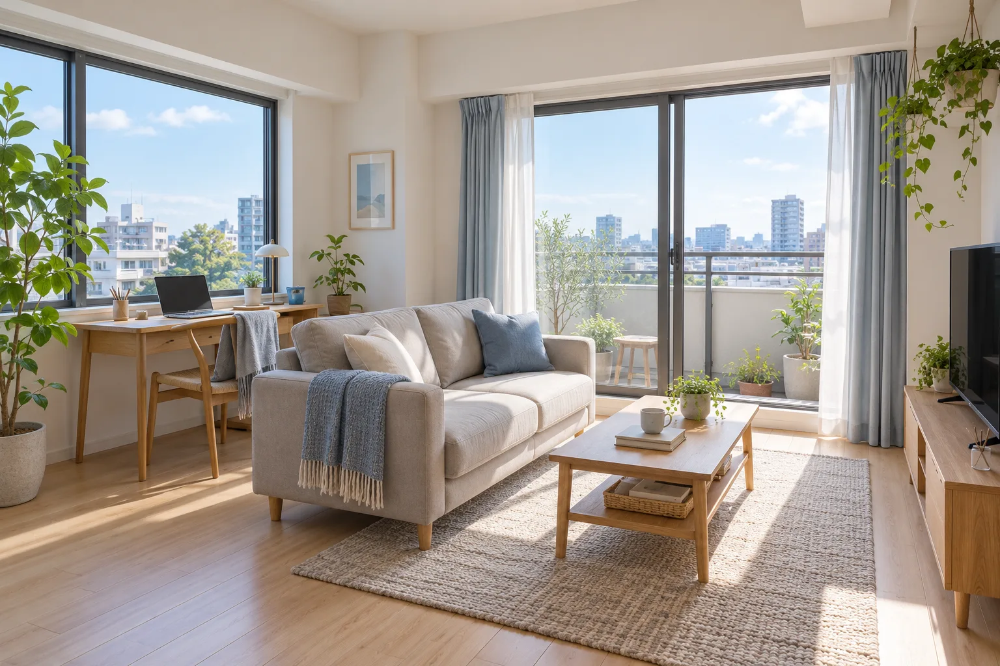
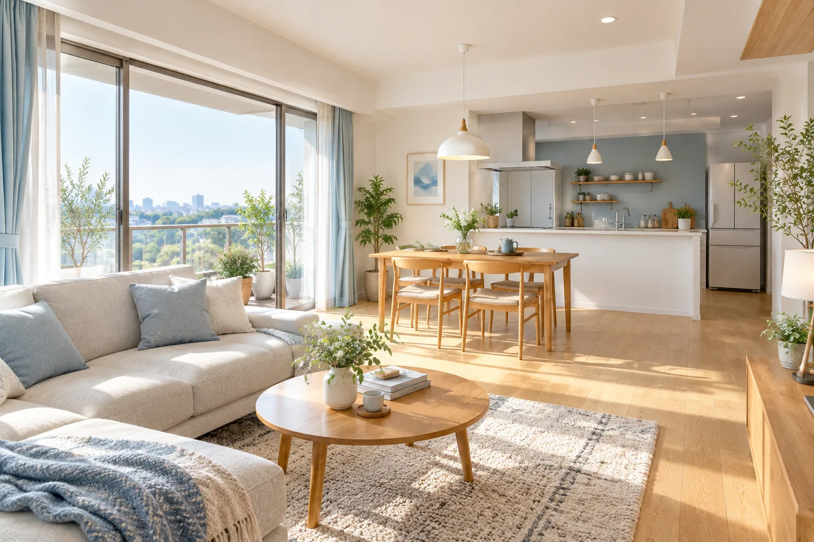
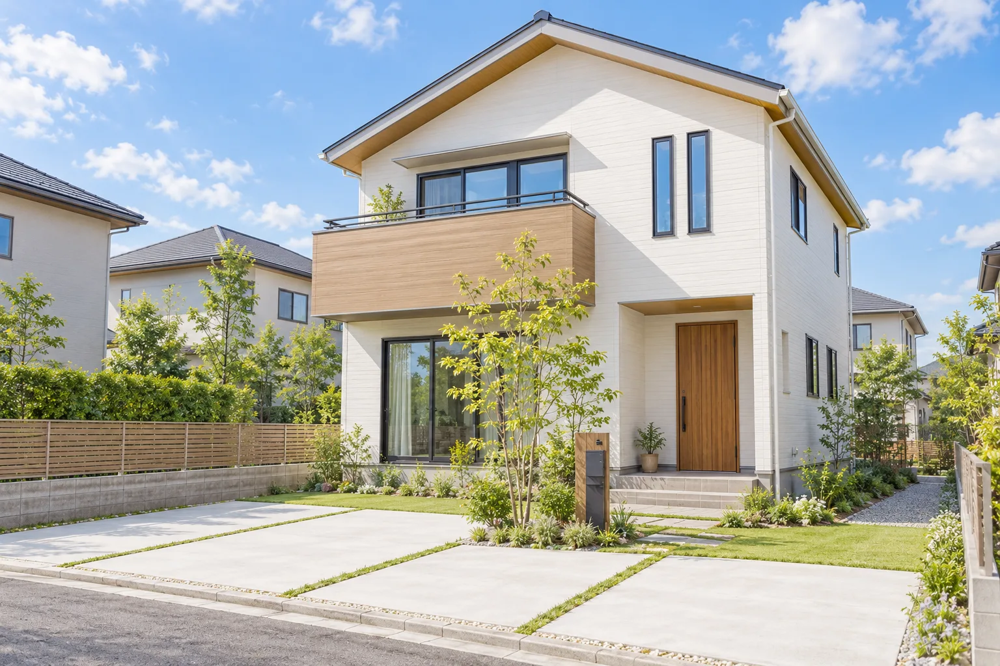
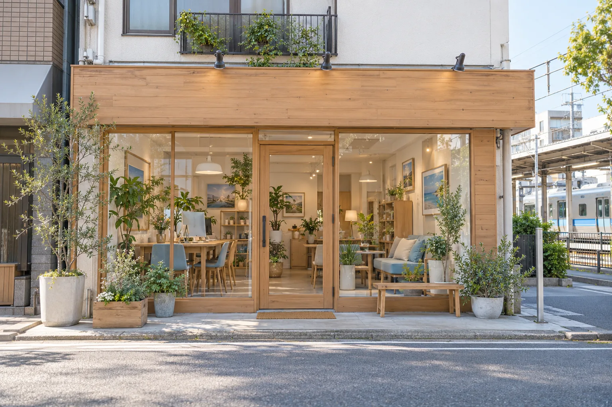

賃貸 NEW名古屋市〇〇区 ／ 〇〇線「〇〇」駅 徒歩7分
南向きの角部屋、在宅ワークにちょうどいい1LDK
賃料7.8万円管理費 5,000円／敷金1・礼金1
- 間取り
- 1LDK38.5㎡
- 築年数
- 築9年
- 階数
- 3階／5階建
- 南向き
- 角部屋
- オートロック
- ネット無料
「リビングの窓が二面あって、昼間は照明いらずの明るさです。」— 賃貸担当 平田
この物件について問い合わせる名古屋市〇〇区・〇〇駅前の不動産屋
はじめての一人暮らしも、家族の住み替えも、実家の売却も。
まちのことをよく知るスタッフが、急かさず、条件の整理から一緒に考えます。
相談だけの
ご来店も歓迎です
Why us
住まいの話は、急いで決めるほど後悔が残りやすいもの。くらしの窓口不動産は、決める前の時間を大切にしています。
スーパーの混む時間帯、通学路の歩道の広さ、夜道の明るさ。地図や検索では分かりにくい「住んでからの実感」を、内見の前にお伝えします。
ご来店当日に申込をおすすめすることはありません。気になる点は持ち帰っていただき、ご家族で話し合ってから、改めてご連絡ください。
「今の家を売って、しばらくは賃貸に」といった住み替えも、同じ担当者が通してご相談をお受けします。何度も説明し直す手間がありません。
Property
スタッフが実際に見てきた、いまおすすめのお部屋とお住まいです。

賃貸 NEW名古屋市〇〇区 ／ 〇〇線「〇〇」駅 徒歩7分
賃料7.8万円管理費 5,000円／敷金1・礼金1
「リビングの窓が二面あって、昼間は照明いらずの明るさです。」— 賃貸担当 平田
この物件について問い合わせる
売買名古屋市〇〇区 ／ 〇〇線「〇〇」駅 徒歩10分
価格2,480万円管理費・修繕積立金 月2.1万円
「小学校まで歩いて6分。お子さまの通学路も一緒に歩いて確認できます。」— 売買担当 吉川
この物件について問い合わせる
売買 NEW名古屋市〇〇区 ／ 〇〇線「〇〇」駅 バス12分
価格3,680万円土地 128.6㎡
「前の道は車通りが少なく、夕方は近所の子どもたちの声が聞こえる環境です。」— 店長 小野寺
この物件について問い合わせる※掲載物件はすべてポートフォリオ用の架空の物件です。所在地・価格・写真・掲載件数は実在の物件とは関係ありません。検索機能はデモのため動作しません。
Sell
相続した実家をどうするか決めかねている、住み替えたいけれど今の家がいくらになるか分からない。売却のご相談は、そんな「まだ決まっていない」段階から承ります。査定をご依頼いただいても、売却をお約束いただく必要はありません。
査定後に営業のお電話を続けることはありません。
Flow
賃貸の場合、ご相談からご入居まではおよそ3〜5週間が目安です。購入の場合は、住宅ローンの審査期間も含めてスケジュールをご案内します。
ご来店・お電話・フォームから。「なんとなく引越したい」段階でも大丈夫です。
優先順位をうかがい、良い点も気になる点も正直にお伝えして候補を絞ります。
お部屋だけでなく、駅までの道やお買い物の場所も、ご希望があれば一緒に歩きます。
契約前に宅地建物取引士が重要事項をご説明。分からない言葉はその場でどうぞ。
鍵のお渡しで終わりではありません。住んでからのお困りごとも同じ窓口で。
Town
駅前には昔ながらの商店街と、遅くまで開いているスーパー。少し歩けば川沿いの緑道があり、週末は散歩やジョギングをする人でにぎわいます。小学校・中学校が徒歩圏に集まっているので、子育て中のご家族にも暮らしやすいエリアです。
ご希望があれば、内見の前後にスタッフがまちをご案内します。
Staff
3人の小さなお店です。
店長／宅地建物取引士
地元生まれ、地元育ち。父の代から続くこの店を継いで十数年になります。売却や相続がからむご相談は、まず私がお話をうかがいます。
賃貸担当／宅地建物取引士
はじめての一人暮らしのお部屋探しが得意です。女性目線での防犯や、夜の帰り道のチェックもおまかせください。
売買担当
前職は住宅会社の営業。建物のつくりや修繕の履歴など、購入前に確かめておきたいポイントを分かりやすくお伝えします。
宅地建物取引業 愛知県知事免許取得（免許番号は架空サイトのため省略）
Voice
はじめての一人暮らしで何から決めればいいのか分からず、条件を紙に書き出すところから付き合ってもらいました。夜の駅からの道も一緒に歩いてくれて、安心して決められました。
「今日決めなくていいですよ」と言ってもらえたのが印象的でした。3回内見して、最後は家族全員が納得してから申し込めたので、住んでからの後悔がありません。
遠方に住んでいて実家の管理に困っていました。売るかどうか迷っている段階から相談に乗ってもらい、片付けの業者さんの手配まで相談できて助かりました。
※掲載の数値・声はポートフォリオ用の架空データです。
まずは、相談だけでも。
「引越すかどうか迷っている」「実家をどうしよう」。そんな段階のお話から、お聞きしています。
FAQ
ここにないご質問も、お電話やフォームからお気軽にどうぞ。
はい、大丈夫です。ご相談だけでお帰りになる方もたくさんいらっしゃいます。ご予約いただくと、担当者がお待たせせずにご案内できます。
賃貸・売買ともに、宅地建物取引業法で定められた上限の範囲内でいただいています。物件ごとの金額は、お申込み前に必ず書面でご案内します。
できます。オンラインでのご相談や、スタッフがお部屋を撮影した動画でのご案内にも対応しています。ご契約時の手続きもご相談ください。
いいえ、査定のご依頼だけでも承ります。価格の目安を知ったうえで「今回は売らない」と決められる方もいらっしゃいます。
はい。数は限られますが、条件に合うお部屋が出たときにご連絡できるよう、ご希望を登録しておくこともできます。
事前にご予約いただければ、定休日や営業時間外のご案内も可能な場合があります。お仕事帰りの夕方以降のご案内もご相談ください。
Shop & Contact

内容を確認のうえ、担当者より1営業日以内にご連絡します。お急ぎの方はお電話でどうぞ。